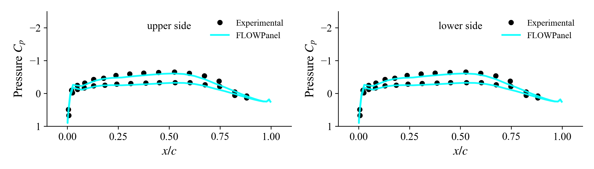
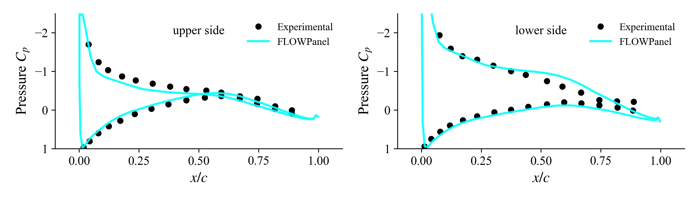

In this example we solve the flow around a fan duct (aka annular airfoil or engine cowl) at an angle of attack leading to asymmetric flow. The geometry is generated as a body of revolution that is watertight.
AOA Sweep
Here we generate the duct as a body of revolution and then we run a sweep of inflow angle of attack
#=##############################################################################
# DESCRIPTION
Fan duct replicating the experiment reported by V. P. Hill (1978), "A
Surface Vorticity Theory for Propeller Ducts and Turbofan Engine Cowls in
Non-Axisymmetric Incompressible Flow." The same experiment is also
discussed in Sections 4.4 and 6.3.1 of Lewis, R. (1991), "Vortex Element
Methods for Fluid Dynamic Analysis of Engineering Systems."
# AUTHORSHIP
* Author : Eduardo J. Alvarez
* Email : Edo.AlvarezR@gmail.com
* Created : Jan 2023
* License : MIT License
=###############################################################################
import FLOWPanel as pnl
import CSV
import DataFrames: DataFrame
include(joinpath(pnl.examples_path, "duct_postprocessing.jl"))
run_name = "duct-hill00" # Name of this run
save_path = run_name # Where to save outputs
fluiddomain = false # Whether to generate fluid domain
paraview = true # Whether to visualize with Paraview
save_plots = false # Whether to save plots or not
# Where to save plots (default to re-generating the figures that are used
# in the docs)
fig_path = joinpath(pnl.examples_path, "..", "docs", "resources", "images")
# ----------------- SIMULATION PARAMETERS --------------------------------------
AOAs = [0, 5, 15] # (deg) angles of attack to evaluate
magVinf = 30.0 # (m/s) freestream velocity
rho = 1.225 # (kg/m^3) air density
# ----------------- GEOMETRY DESCRIPTION ---------------------------------------
# Read duct contour (table in figure 7.4 of Lewis 1991)
filename = joinpath(pnl.examples_path, "data", "naca662015.csv")
contour = CSV.read(filename, DataFrame)
aspectratio = 0.6 # Duct trailing edge aspect ratio l/d
d = 2*0.835 # (m) duct diameter
# ----------------- SOLVER PARAMETERS ------------------------------------------
# Discretization
NDIVS_theta = 60 # Number of azimuthal panels
# NOTE: NDIVS is the number of divisions (panels) in each dimension. This can be
# either an integer, or an array of tuples as shown below
n_rfl = 10 # This controls the number of chordwise panels
NDIVS_rfl_up = [ # Discretization of airfoil upper surface
# 0 to 0.25 of the airfoil has `n_rfl` panels at a geometric expansion of 10 that is not central
(0.25, n_rfl, 10.0, false),
# 0.25 to 0.75 of the airfoil has `n_rfl` panels evenly spaced
(0.50, n_rfl, 1.0, true),
# 0.75 to 1.00 of the airfoil has `n_rfl` panels at a geometric expansion of 0.1 that is not central
(0.25, n_rfl, 0.1, false)]
NDIVS_rfl_lo = NDIVS_rfl_up # Discretization of airfoil lower surface
# NOTE: A geometric expansion of 10 that is not central means that the last
# panel is 10 times larger than the first panel. If central, the
# middle panel is 10 times larger than the peripheral panels.
# Solver: Vortex-ring least-squares
bodytype = pnl.RigidWakeBody{pnl.VortexRing, 2} # Elements and wake model
# ----------------- GENERATE BODY ----------------------------------------------
# Re-discretize the contour of the body of revolution according to NDIVS
xs, ys = pnl.gt.rediscretize_airfoil(contour[:, 1], contour[:, 2],
NDIVS_rfl_up, NDIVS_rfl_lo;
verify_spline=false)
# Make sure that the contour is closed
ys[end] = ys[1]
# Scale contour by duct length
xs *= d*aspectratio
ys *= d*aspectratio
# Move contour to the radial position
ys .+= d/2
# Collect points that make the contour of the body of revolution
points = hcat(xs, ys)
# Generate body of revolution
body = pnl.generate_revolution_liftbody(bodytype, points, NDIVS_theta;
bodyoptargs = (
CPoffset=1e-14,
kerneloffset=1e-8,
kernelcutoff=1e-14,
characteristiclength=(args...)->d*aspectratio
)
)
println("Number of panels:\t$(body.ncells)")
vtks = save_path*"/" # String with VTK output files
# ----------------- CALL SOLVER ------------------------------------------------
for (i, AOA) in enumerate(AOAs) # Sweep over angle of attack
println("Solving body...")
# Freestream vector
Vinf = magVinf*[cos(AOA*pi/180), 0, sin(AOA*pi/180)]
# Freestream at every control point
Uinfs = repeat(Vinf, 1, body.ncells)
# Unitary direction of semi-infinite vortex at points `a` and `b` of each
# trailing edge panel
Das = repeat(Vinf/magVinf, 1, body.nsheddings)
Dbs = repeat(Vinf/magVinf, 1, body.nsheddings)
# Solve body (panel strengths) giving `Uinfs` as boundary conditions and
# `Das` and `Dbs` as trailing edge rigid wake direction
@time pnl.solve(body, Uinfs, Das, Dbs)
# ----------------- POST PROCESSING ----------------------------------------
println("Post processing...")
# Calculate surface velocity U on the body
Us = pnl.calcfield_U(body, body)
# NOTE: Since the boundary integral equation of the potential flow has a
# discontinuity at the boundary, we need to add the gradient of the
# doublet strength to get an accurate surface velocity
# Calculate surface velocity U_∇μ due to the gradient of the doublet strength
# UDeltaGamma = pnl.calcfield_Ugradmu(body)
UDeltaGamma = pnl.calcfield_Ugradmu(body; sharpTE=true, force_cellTE=false)
# Add both velocities together
pnl.addfields(body, "Ugradmu", "U")
# Calculate pressure coefficient (based on U + U_∇μ)
@time Cps = pnl.calcfield_Cp(body, magVinf)
# Calculate the force of each panel (based on Cp)
@time Fs = pnl.calcfield_F(body, magVinf, rho)
# ----------------- COMPARISON TO EXPERIMENTAL DATA ------------------------
# Plot surface pressure along slices of the duct
fig, axs = plot_Cp(body, AOA)
if save_plots
fname = "$(run_name)-Cp-AOA$(ceil(Int, AOA)).png"
fig.savefig(joinpath(fig_path, fname), dpi=300, transparent=true)
end
# ----------------- VISUALIZATION ------------------------------------------
# Compute fluid domain and save as VTK
if fluiddomain
global vtks *= generate_fluiddomain(body, AOA, Vinf, d,
aspectratio, save_path; num=i)
end
# Save body as VTK
if paraview
global vtks *= pnl.save(body, "duct"; path=save_path, num=i,
wake_panel=false, debug=true)
end
end
# Call Paraview
if paraview
run(`paraview --data=$(vtks)`)
end(see the complete example under examples/duct.jl )
No AOA (symmetric flow)

5° angle of attack

15° angle of attack

In the plots above, the upper and lower sides correspond to the slice shown here below: